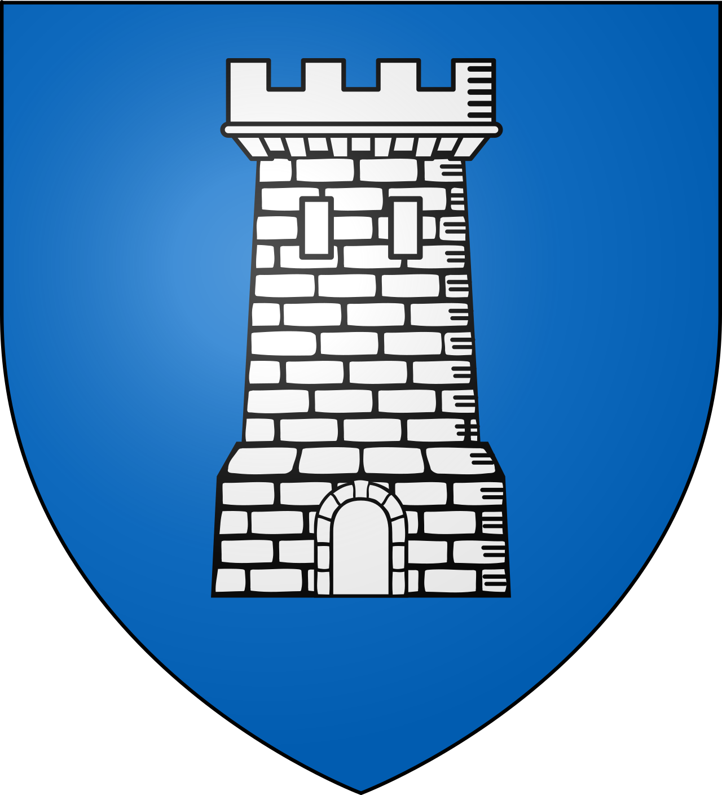
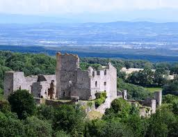

SaissacForteresse cathare
aux portes de la Montagne Noire


⟹ Sites Emblématiques ⟸

Aux portes de la Montagne Noire, sur un balcon naturel dominant la plaine de Carcassonne et le ravin de la Vernassonne, Saissac occupe depuis très longtemps une position stratégique. Le territoire communal conserve des traces d'occupation préhistorique, notamment des monuments mégalithiques. Le nom de Saissac, attesté au Moyen Âge sous des formes apparentées à Saxiago, est généralement rattaché à un ancien nom de domaine d'origine gallo-romaine.
Le château est l'un des plus anciens ensembles fortifiés connus du pays. Des analyses archéologiques ont suggéré l'existence d'une fortification dès les environs de l'an 900. La première mention écrite certaine date de 960 : Hugues, évêque de Toulouse, cède alors le château au comte de Carcassonne. Cette date place Saissac parmi les sites castraux les plus précocement documentés de la région.

Aux XIᵉ et XIIᵉ siècles, les comtes puis vicomtes de Carcassonne confient la seigneurie à de puissants vassaux locaux : c'est l'essor du lignage des Saissac. Le château n'est pas seulement une forteresse ; il commande un véritable castrum, c'est-à-dire un habitat fortifié établi sur les pentes sous la résidence seigneuriale. Les vestiges de cet ancien village castral, de ses chemins et de la porte dite de Toulouse sont encore visibles. Cet habitat est progressivement abandonné au cours de la première moitié du XIIIᵉ siècle au profit du village actuel.
La figure la plus célèbre de la famille est Bertrand de Saissac, né vers 1140 et mort au début du XIIIᵉ siècle. Important vassal des Trencavel, il devient le tuteur du jeune Raimond-Roger Trencavel après la mort de son père. Sa cour est liée au monde des troubadours et il est présenté par plusieurs traditions comme un protecteur actif des cathares. Son parcours illustre les liens complexes qui unissaient aristocratie méridionale, culture courtoise et dissidence religieuse à la veille de la croisade.
Lorsque la croisade contre les Albigeois débute en 1209, l'équilibre politique s'effondre. Après la prise de Carcassonne, les seigneurs de Saissac perdent l'essentiel de leur pouvoir. La seigneurie passe à des barons venus du Nord, d'abord Bouchard de Marly, puis Lambert de Thurey en 1234. Certains membres de l'ancienne famille conservent ou récupèrent des droits, mais à condition de reconnaître l'autorité nouvelle et de ne plus protéger le catharisme.
La croisade n'entraîne pas la disparition du château. Au contraire, l'ensemble est profondément réorganisé aux XIIIᵉ et XIVᵉ siècles. Les grandes courtines, les tours quadrangulaires et le donjon appartiennent pour une large part à ces campagnes médiévales, probablement réalisées avec des techniques proches de celles employées dans les forteresses royales. Saissac devient ainsi une place adaptée au nouvel ordre politique installé après la conquête du Languedoc.
La seigneurie change ensuite plusieurs fois de mains. Elle passe notamment dans le patrimoine de grandes familles féodales et devient au début du XVᵉ siècle une baronnie donnant entrée aux États de Languedoc. Cette dignité témoigne de son poids politique. En 1604, la terre est érigée en marquisat.
Le XVIᵉ siècle constitue une nouvelle grande phase de transformation. En 1518, la famille de Bernuy, enrichie par le commerce du pastel, hérite du domaine et adapte l'austère forteresse médiévale aux exigences d'une résidence aristocratique : grandes ouvertures, logis plus confortables et décors Renaissance modifient son aspect. À partir de 1565, les Clermont-Lodève poursuivent les aménagements et renforcent les défenses pour tenir compte de l'artillerie.
Durant les guerres de Religion, le secteur est plusieurs fois menacé. Des troupes protestantes ravagent le village en 1568 puis en 1580 sans parvenir à prendre la forteresse. Des canonnières et dispositifs défensifs témoignent de cette adaptation à la guerre moderne. Au milieu du XVIIᵉ siècle, le château forme encore un vaste ensemble comprenant logements, tours, écuries, basses-cours, jardins et terrains dépendants.
Le déclin s'accélère après le transfert, en 1670, du privilège de la baronnie vers Pezens. En 1715, le domaine entre par alliance dans la maison de Luynes, dont les propriétaires ne résident pas à Saissac. En 1759, le château est déjà décrit comme en grande partie ruiné. La Révolution puis le XIXᵉ siècle aggravent les dégradations : les bâtiments servent de carrière de pierres et les ruines attirent même des chercheurs de trésors.
Au XXᵉ siècle commence une lente redécouverte patrimoniale. Le château est acquis en 1920 par l'écrivain et cinéaste Henry Dupuy-Mazuel. Après sa mort, ses héritiers le donnent à la commune en 1994. Depuis 1995, d'importantes campagnes de consolidation, de fouilles et de restauration permettent de sauver l'ensemble et de restituer certaines parties du logis Renaissance.
Les recherches ont également mis en valeur un remarquable trésor monétaire découvert à Saissac, ainsi que les vestiges de l'ancien castrum. Aujourd'hui, le château permet donc de lire près d'un millénaire d'architecture : fortification précoce, château féodal des Saissac, transformations postérieures à la croisade, résidence Renaissance, adaptations aux armes à feu, ruine romantique puis restauration contemporaine. Cette stratification historique fait de Saissac bien davantage qu'un simple « château cathare » : c'est un véritable résumé de l'histoire politique et militaire du Languedoc.
Saissac s'accroche aux premiers contreforts de la Montagne Noire, à 467 mètres d'altitude, à la limite du département du Tarn. De ce belvédère naturel, le regard porte sur la plaine du Lauragais qui s'étend entre Carcassonne et Castelnaudary, et par temps dégagé, jusqu'à la chaîne des Pyrénées.
Étagé sur un éperon rocheux dominant le ravin de la Vernassonne, le site de Saissac offre l'un des panoramas les plus vastes de la Montagne Noire audoise.
— Office de tourisme Grand CarcassonneForêts, lacs de barrage et rivières façonnent ce territoire de moyenne montagne, très différent des paysages secs des Corbières plus au sud. Le Lampy, qui traverse la commune, rappelle le rôle historique de la Montagne Noire dans l'alimentation en eau du Canal du Midi tout proche.
Châteaux de Lastours quatre châteaux cathares perchés côte à côte, à moins de 30 minutes.
Cité de Carcassonne à 20 km, forteresse médiévale classée au patrimoine mondial de l'UNESCO.
Lacs de la Montagne Noire lac de Lampy et lac de Cavayère, pour la baignade et la randonnée.
Canal du Midi ses ouvrages d'alimentation en eau, conçus par Pierre-Paul Riquet, prennent leur source dans ce massif.